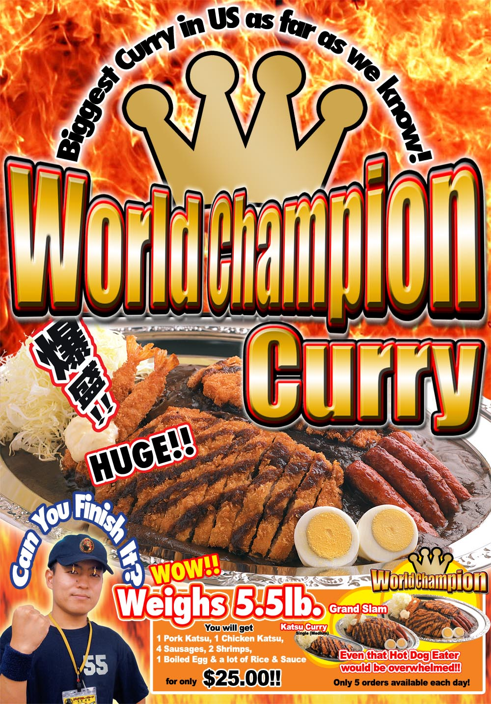

-
WA-SHOCK
Japanese food is readily available in New York City. But, how often do you see real Japanese people making the food there? How often do you see real Japanese people eating there? At CJS MATSURI 2008, there are real Japanese people serving real Japanese food, as Japanese people in Japan would be eating it. Not only is it authentic, but they are serving foods that might surprise you as being Japanese...
-
Go Go Curry
Go Go Curry a Japanese-style curry restaurant located Midtown and East Village. Their curry is large, delicious, and cheap! On top of which, they are a huuge fan of baseball and if you go grab a curry the day after Godzilla Matsui hits a home run, you can receive a free treat!
Check out their official homepage here!
Their World Champion Curry will be eaten ON STAGE by our very brave contestants...

-
OMS/B
OMS/B (read omusubi) serves a new kind of dish somewhere between a rice ball (omusubi) and sushi. These delectible little balls are cheaper than sushi and far more filling. They're also very pretty to look at!
Check out their official homepage here

-
Cecel Cafe Crepe
Crepes are a huge in Tokyo's youth districts. You cannot pass through Shibuya or Harajuku without catching the scent of a nearby crepe shop. But Japanese crepes are different from French crepes. They're obviously not as fancy. But how exactly are they different? You'll have to come and try them out!
-